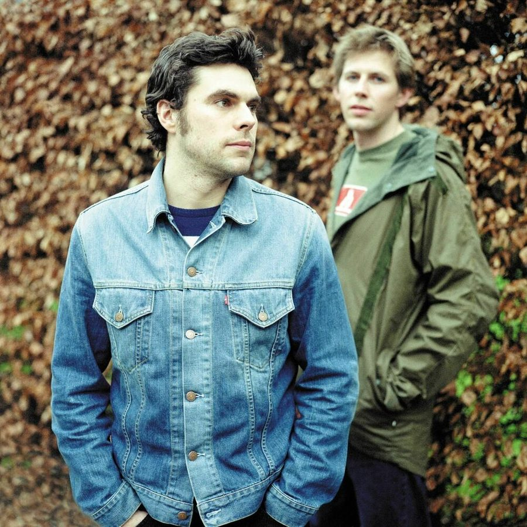

Groove Armada’s new era: “We’re happy being house DJs now”


Groove Armada’s New Era: “We’re happy being house DJs now”
You can look to London stalwarts Andy Cato and Tom Findlay AKA Groove Armada for an effective illustration of how mainstage dance music has transformed the past few years. For over a decade, Groove Armada were one of dance music’s marquee live acts alongside Faithless, Chemical Brothers and Underworld. Their string for the masterful, with their hugely diverse swathe of albums like Vertigo, Goodbye Country, Hello Nightclub and Love Box matched only by the formidable live musicianship that was shown by their touring band.
In the current climate of EDM though, it’s as if Groove Armada have effectively been transformed into an underground act again. It’s hard to imagine music as thoughtful as theirs played alongside the cheap thrills dominating the dance festival mainstages now. Tom Findlay revealed to Data Transmission this week that they could see the change coming in the summer of 2011.
“The tours had been very good,” he said, “but there had been a few festivals towards the end were the inevitable rise of EDM meant that the nature of mainstage dance music was changing. The kids weren’t really that fussed whether or not you had live instruments, it wasn’t really about that. It was about CO2 cannons and laser shows and all that kind of stuff.”
Groove Armada’s clever response was to go back to their DJ roots. They’ve just completed their most hyped yet season as residents at We Love… Space in Ibiza, and Data Transmission got Findlay on the phone just few short days after the spectacular closing party. Only just having arrived back from Ibiza, Findlay described the Groove Armada state of mind as “a bit tired and emotional,” with those mixed feelings that come from the spectacular closing parties, which also obviously represent the end of the Ibiza season, and the end of summer.
““It’s always quite a sad thing. But it’s been a really great summer on the terrace at We Love… Space this year. As good as I can remember it in a long time”.
They’ve got another hefty gig coming up this weekend that will see them, in Findlay’s words, “back in Shoreditch doing a warehouse gig for a thousand people”. They’ve also got their new Sweat EP due for release on Danse Club Records next week. To mark the occasions, Data Transmission finds out more about the new era of Groove Armada.
How long have you been playing at We Love… Space for now?
With one interrupted year when we went to Eden, which was a long time ago, it’s been 16 years. While we haven’t always necessarily been ‘residents’ as such, it’s been the Ibiza night we’ve always been involved with. The interesting thing is the same people involved now were actually involved back then, there’s this ‘extended family’ feel to the whole thing, it’s a bit special.
Perhaps there’s something a little more special about a Groove Armada DJ set nowadays too, now you’re not on the touring circuit anymore.
I think we’ve become better DJs because we’ve been able to spend more time on it. You think a little bit more about how you put yourself across, bringing a bit of our experience playing live into it in terms of how we control the sound, and the edits we do, we’re quite hands on in the way we do the gigs. It’s obviously what we’re doing now, and it means a lot to us to get it right, to try and keep that same intensity in our DJ performances that we had when we played live, definitely.
You were touring your last album Black Light up until the end of 2011. What was the main motivation to change things up, when the touring had been successful for so long?
There were a number of reasons. Partly we felt at that point we were playing as a band as long as we could remember, and we wanted to go out with a real sense we were at the top of our game. And I think in that last year of touring we should have been headlining the smaller stages, rather than playing the dance festival mainstages. With the benefit of hindsight, we would have done that differently. The gigs that were really great were playing the John Peel stage at Glastonbury, that really worked, or our shows at the Brixton Academy. When it didn’t work was when we were headlining European dance festivals when Laidback Luke would come on after us. No disrespect to him, but that was what we felt was around us at that time. It was more about volume and spectacle, and less about interesting musicianship or anything like that.
Continued on page 2